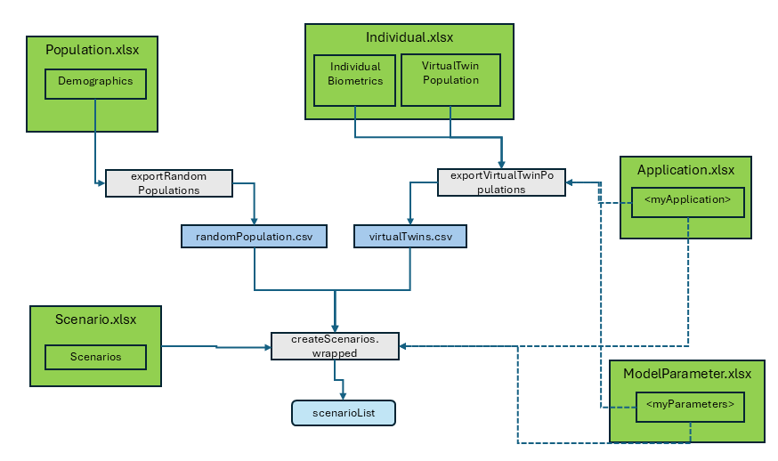

Population
Understanding Random and Virtual Twin Populations in OSPSuite Reporting Framework
Population.Rmd
library(ospsuite.reportingframework)
options(rmarkdown.html_vignette.check_title = FALSE)
The package supports two population workflows:
- Use Virtual Twin Population when observed individual biometrics are available.
- Use Random Population when you want synthetic populations generated from demographic ranges.
Both workflows export CSV population files to
<rootdirectory>/Models/Populations.
Virtual Twin Population
Virtual twins are generated from observed individual biometrics. Known biometrics are taken from observed data, and missing characteristics are completed from model defaults.
When data are imported with
readObservedDataByDictionary(), the sheet
VirtualTwinPopulation is added to
Individual.xlsx automatically. If observed data are loaded
by another route, create this configuration explicitly:
setupVirtualTwinPopConfig(
projectConfiguration = projectConfiguration,
dataObserved = dataObserved
)You can then export one or more configured virtual twin populations:
exportVirtualTwinPopulations(
projectConfiguration = projectConfiguration,
modelFile = "MyModel.pkml",
overwrite = FALSE,
populationNames = NULL
)This export adds ObservedIndividualId to preserve the
mapping to observed individuals.
Use PopulationName as PopulationId in
scenario setup and set ReadPopulationFromCSV = TRUE.
If the same parameters are set by both population and scenario configuration, scenario settings take precedence.
Random Population
Random populations are generated from demographic ranges (for example age and body weight) and optional parameter distributions.
Configure random populations in the Demographics sheet
of Population.xlsx. Population identifiers are defined in
PopulationName. Optional per-population parameter sheets
can define distributed parameters.
exportRandomPopulations(
projectConfiguration = projectConfiguration,
populationNames = NULL,
overwrite = FALSE
)The customParameters argument can be used to set
model-specific parameter values that are not defined in the demographics
table.
In the scenario setup, you can use the PopulationName as
PopulationId and set the column
ReadPopulationFromCSV to 1 (TRUE). (With
ReadPopulationFromCSV = 0 (FALSE), the population will be
generated anew during the scenario setup. The usage of the distributed
parameters is not yet implemented this way; only the demographics will
be considered. Additionally, since it is currently not possible to set a
seed, each scenario setup will produce a new population.)